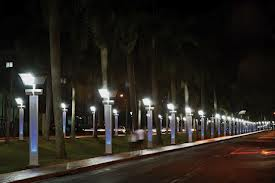

Pagamento recusado
Produto enviado
Em aprovação
Faça a sua pesquisa aqui:
HTML & CSS
Avançar
Ir para a próxima página
E-mail enviado com sucesso!
Atenção, preencha todos os campos do
formulário
TNT
37

San Francisco, Califórnia 123
Por Salim Virji (http://www.flickr.com/photos/salim/402618628/)
Um gradiente azul clássico, utilizando 2 tons similares.
Uma versão inversa do gradiente azul.
Combinando "top" e "right" para a direção.
Utilizando posições específicas para as cores.
Preencha o campo com um e-mail válido, assim poderemos entrar em
contato com você para informar o resultado do nosso concurso.